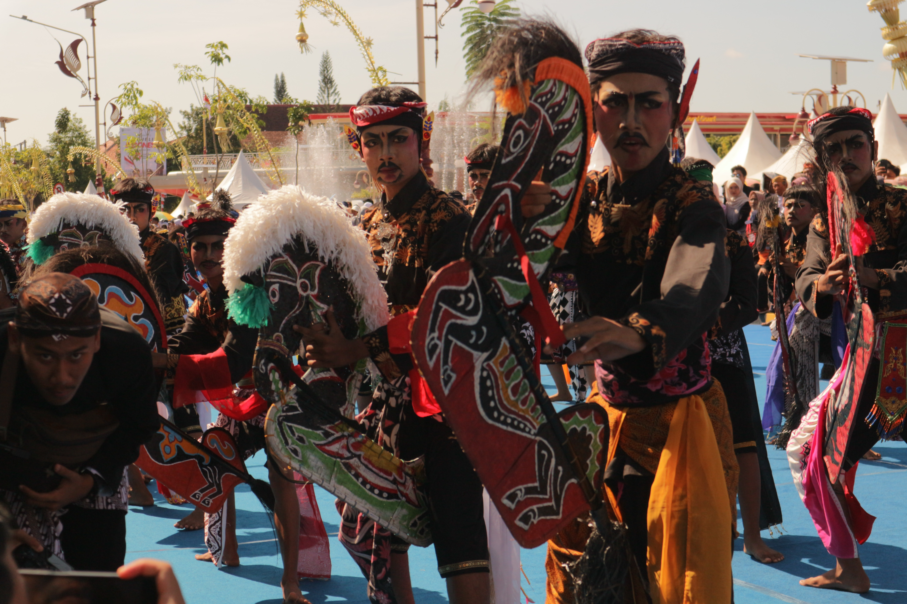
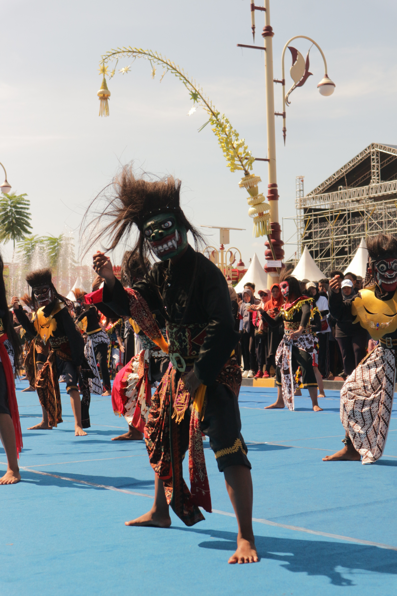

Selamat Datang
di Website Resmi Desa Logandu





Melalui website ini anda dapat menjelajahi segala hal menarik terkait Desa Logandu. Mulai dari aspek sejarah, budaya, umkm, dan struktur organisasi yang ada di Desa Logandu.